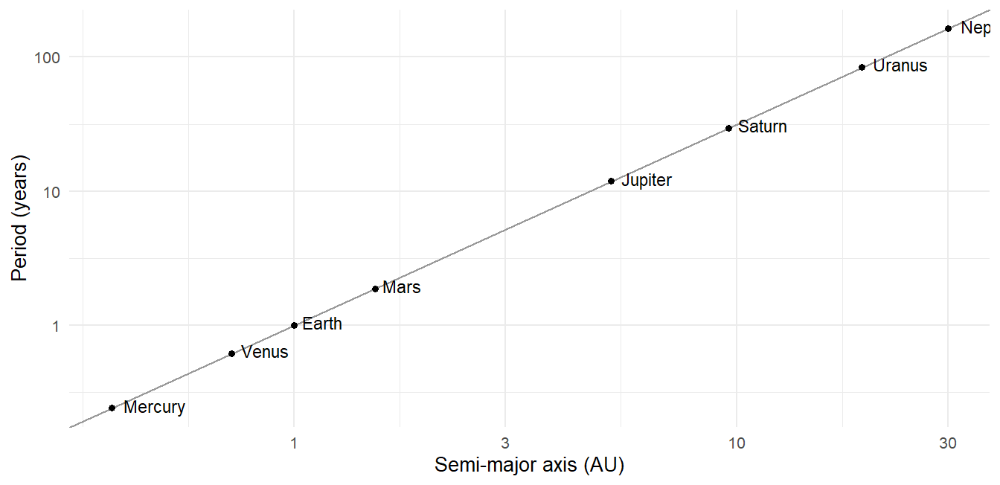
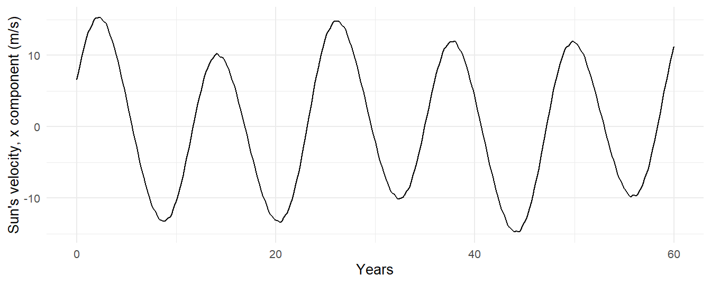
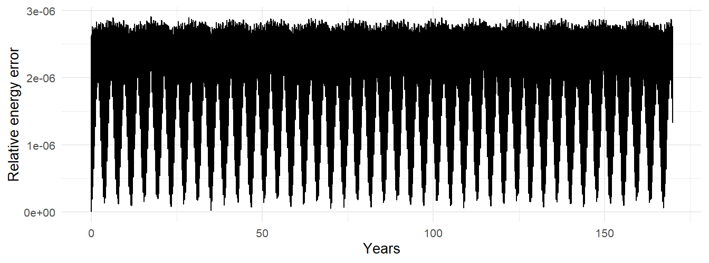

solar <- load_solar_system(moon = FALSE, pluto = FALSE) |>
simulate_system(time_step = seconds_per_day, duration = seconds_per_year * 170)
solar |> count(id)
#> # A tibble: 9 × 2
#> id n
#> <chr> <int>
#> 1 Earth 62093
#> 2 Jupiter 62093
#> 3 Mars 62093
#> 4 Mercury 62093
#> 5 Neptune 62093
#> 6 Saturn 62093
#> 7 Sun 62093
#> 8 Uranus 62093
#> 9 Venus 620938 The Solar System from JPL Elements
Part II built the tools. Part III uses them. This chapter takes the one system everyone knows, asks where the package’s numbers for it come from, and then uses a single long run to do three pieces of real astronomy: verify Kepler’s third law across all eight planets and weigh the Sun with it, measure how often Earth and Mars line up, and watch the Sun wobble under Jupiter’s pull in the way that lets astronomers find planets around other stars.
8.1 One call
Nine bodies for 170 years at a daily step: a little over half a million rows, which takes a minute or so (Chapter 15 explains where the time goes). The run is long because Neptune’s period is 165 years and I want to measure it. The Moon is left out because a daily step is far too coarse for it (Chapter 5), and Pluto because it would need another century.
Every planet starts at perihelion, which is the package’s default, so the planets begin lined up along their individual perihelion directions rather than where they were on any real date. Chapter 7 showed how to fix that with Kepler’s equation if you need to; for the measurements below it does not matter.
8.2 Where the numbers come from
The elements behind add_planet() are from JPL’s DE440 planetary ephemeris (Park et al. 2021). An ephemeris is not a theory; it is a fit. JPL integrates the full equations of motion of the solar system, including general relativity, the oblateness of the Sun and planets, hundreds of asteroids, and the Moon’s own rotation, and adjusts the initial conditions and masses until the model matches every observation they have: centuries of optical astrometry, decades of radar ranging to the inner planets, laser ranging to the Moon, and tracking data from every spacecraft that has flown past or orbited a planet. The result is positions good to well under a kilometer for the inner planets, and the masses in Appendix D are by-products of the same fit.
What the package takes from DE440 is the osculating elements of each planet at one instant, the J2000 epoch (noon on January 1, 2000, in Terrestrial Time), in the ecliptic frame of that date. Those elements describe the ellipse each planet was on at that instant. From there orbitr integrates point-mass Newtonian gravity, nothing else. Over the years and decades the planets’ orbits stay very close to the real ones; over centuries the effects JPL includes and orbitr does not (relativity for Mercury, the asteroids for Mars) accumulate to differences you could detect with a telescope but not by eye.
8.3 Kepler’s third law, verified
Chapter 4 derived \(T = 2\pi\sqrt{a^3/\mu}\) for one planet. Kepler’s version, that \(T^2/a^3\) is the same for all planets, is the statement that \(\mu\) is the same for all of them, which it is to the extent that every planet’s mass is negligible against the Sun’s. Let’s measure it. For each planet, the osculating elements at the start give \(a\), and measure_period() gives \(T\):
planets <- c("Mercury", "Venus", "Earth", "Mars",
"Jupiter", "Saturn", "Uranus", "Neptune")
kepler3 <- bind_rows(lapply(planets, function(p) {
get_orbital_elements(solar, p, "Sun", mu = gravitational_constant * mass_sun)[1, ] |>
mutate(planet = p,
T_days = measure_period(solar, p, "Sun") / seconds_per_day)
})) |>
select(planet, a, e, T_days)
kepler3
#> # A tibble: 8 × 4
#> planet a e T_days
#> <chr> <dbl> <dbl> <dbl>
#> 1 Mercury 5.79e10 0.206 88.2
#> 2 Venus 1.08e11 0.00680 225.
#> 3 Earth 1.50e11 0.0167 365.
#> 4 Mars 2.28e11 0.0934 687.
#> 5 Jupiter 7.78e11 0.0489 4329.
#> 6 Saturn 1.43e12 0.0565 10786.
#> 7 Uranus 2.87e12 0.0457 30795.
#> 8 Neptune 4.49e12 0.0113 59514.Mercury’s 88 days and Neptune’s 165 years come out of the same run. On a log-log plot, \(T\) against \(a\) should be a straight line of slope \(3/2\):
fit <- lm(log(T_days) ~ log(a), data = kepler3)
kepler3 |>
ggplot(aes(a / distance_earth_sun, T_days / 365.25)) +
geom_abline(intercept = 0, slope = 1.5, color = "grey60") + # T = a^(3/2) in AU and years
geom_point() +
geom_text(aes(label = planet), hjust = -0.2, vjust = 0.3, size = 3) +
scale_x_log10() + scale_y_log10() +
labs(x = "Semi-major axis (AU)", y = "Period (years)")
coef(fit)[["log(a)"]]
#> [1] 1.498288That is the exponent. Now the constant. Rearranging, \(\mu = 4\pi^2 a^3/T^2\), and \(\mu/G\) is a mass:
kepler3 |>
mutate(M_implied = 4 * pi^2 * a^3 / (T_days * seconds_per_day)^2 /
gravitational_constant,
M_over_sun = M_implied / mass_sun) |>
select(planet, M_over_sun)
#> # A tibble: 8 × 2
#> planet M_over_sun
#> <chr> <dbl>
#> 1 Mercury 0.994
#> 2 Venus 0.999
#> 3 Earth 1.000
#> 4 Mars 1.000
#> 5 Jupiter 1.00
#> 6 Saturn 1.01
#> 7 Uranus 0.994
#> 8 Neptune 1.02Every planet weighs the Sun. The answers agree to better than a part in a thousand, and the one that disagrees most is Jupiter, because what the period really measures is \(M_\odot + m_{\mathrm{planet}}\), and Jupiter is a thousandth of a solar mass. Kepler had no way to know that his third law was slightly different for each planet; the differences were far below the precision of Tycho’s data. We can see them in a table.
8.4 How often do Earth and Mars line up?
Mars is closest to Earth, and brightest in our sky, at opposition, when Earth passes between Mars and the Sun, so that the two planets have the same heliocentric longitude. How often does that happen? Earth laps Mars, and the time between lappings, the synodic period, follows from the angular rates. Earth’s longitude advances at \(2\pi/T_E\) per unit time and Mars’s at \(2\pi/T_M\), so the difference advances at \(2\pi(1/T_E - 1/T_M)\), and one full lap takes
\[ \frac{1}{T_{\mathrm{syn}}} = \frac{1}{T_E} - \frac{1}{T_M}. \tag{8.1}\]
With the measured periods:
T_E <- kepler3$T_days[kepler3$planet == "Earth"]
T_M <- kepler3$T_days[kepler3$planet == "Mars"]
1 / (1 / T_E - 1 / T_M)
#> [1] 780.2493About 780 days, or two years and seven weeks. Now from the data directly. Compute each planet’s heliocentric longitude, unwrap it so it grows continuously, and take the difference:
longitude <- function(sim, body) {
relative_state(sim, body, "Sun") |>
transmute(time, lambda = unwrap(atan2(ry, rx)))
}
lap <- inner_join(longitude(solar, "Earth"), longitude(solar, "Mars"),
by = "time", suffix = c("_earth", "_mars")) |>
mutate(lead = lambda_earth - lambda_mars)The lead grows by \(2\pi\) per synodic period, so its average slope gives \(T_{\mathrm{syn}}\) directly:
slope <- coef(lm(lead ~ time, data = lap))[["time"]]
2 * pi / slope / seconds_per_day
#> [1] 780.2043The two agree. But the lead does not grow uniformly. The times when it passes a multiple of \(2\pi\) are the oppositions:
oppositions <- lap |>
filter(floor(lead / (2 * pi)) != lag(floor(lead / (2 * pi)))) |>
pull(time) / seconds_per_day
head(diff(oppositions), 8)
#> [1] 783 809 799 775 767 764 767 777The gaps between successive oppositions swing from about 764 to 810 days. The reason is Mars’s eccentricity: it moves faster near perihelion and slower near aphelion, so Earth catches it sooner or later depending on where in its orbit the catching happens. Oppositions near Mars’s perihelion are also the close ones, when Mars is at its largest and brightest in our sky; they recur every 15 to 17 years, and the synodic period alone does not tell you that. The simulation does.
8.5 The Sun wobbles
The Sun is not fixed. Chapter 4’s center-of-mass analysis applies to every pair, and Jupiter, a thousandth of a solar mass at 5.2 AU, pulls the Sun around a circle of radius about 0.005 AU, a little more than the Sun’s own radius, once every 11.9 years. The Sun’s speed on that circle is a dozen meters per second. That number is the foundation of the radial-velocity method for finding planets around other stars: you cannot see the planet, but a spectrograph can see the star’s velocity along your line of sight change by meters per second as the planet goes around.
load_solar_system() starts the Sun at rest at the origin, so the system’s center of mass drifts slowly (Chapter 2 again). To see the wobble alone, look at the Sun in the barycentric frame, where the center of mass is at rest by construction:
sun_wobble <- solar |>
shift_reference_frame("barycenter") |>
filter(id == "Sun")sun_wobble |>
filter(time < seconds_per_year * 60) |>
ggplot(aes(time / seconds_per_year, vx)) +
geom_line() +
labs(x = "Years", y = "Sun's velocity, x component (m/s)")
Twelve meters per second is a brisk walking pace, measured on a star. For a distant observer sitting in the plane of the solar system, that is the signal the Sun would show. Modern spectrographs reach below one meter per second, which is enough to find Saturn (about 3 m/s) and, with patience, Neptune. Earth’s contribution is nine centimeters per second, which is why finding true Earth twins this way is still at the edge of what is possible.
8.6 A long run checked
A 170-year integration is long enough that it is worth asking whether the integrator held up. The total energy of a nine-body system needs every pair at every time step, which for 62,000 steps and 36 pairs is more rows than we need; sampling every 30 days is plenty for a drift check:
solar |>
filter(time %% (seconds_per_day * 30) == 0) |>
conserved_quantities() |>
ggplot(aes(time / seconds_per_year, energy_error)) +
geom_line() +
labs(x = "Years", y = "Relative energy error")
The error oscillates at the level set by Mercury, the tightest orbit, and does not grow, which is Chapter 5’s promise kept over 62,000 steps. If you double the duration, the band stays the same width. If you double the step, it gets four times wider. Both are worth doing once to see.